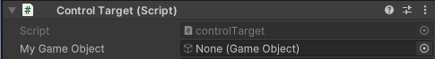

Plusieurs variables sont disponibles dans Unity et nous permettent de parler à des objets spécifiques.
Dans cette section, nous verrons les variables que vous connaissez déjà grâce à vos cours de programmation.
La variable int nous permet de compter des chiffres entiers. On la déclare de cette façon:
On peut mettre la variable public ou private selon notre préférence. Si on la mets publique, on pourra changer sa valeur directement dans l'inspecteur. On comprend que myInt est le nom que je donne à ma variable, ainsi vous pouvez mettre le nom de votre choix tant qu'il n'y a pas d'accent.
Voici commment assigner une valeur à notre variable int:
La variable float nous permet de compter des chiffres décimaux. On la déclare de cette façon:
Dans Unity, il y a une particularité pour les Float dans le code. Lorsque je change la valeur d'un float et qu'elle n'est pas entière, je dois mettre un f après celui-ci pour spécifier à Unity que c'est un float. Voici un exemple:
On comprends que pour assigner un float, on doit mettre un point entre les chiffres (et non une virgule!) et qu'il faut mettre un f à la fin.
La variable bool nous permet de créer un Boolean, donc une variable qui sera vraie ou fausse. On la déclare de cette façon:
Pour assigner une valeur vraie ou fausse à cette variable, voici comment faire:
Pour la valeur faux, on écrirait false plutôt que true.
La variable Vector 2 nous permet de créer une variable avec une position en x et une en y. On la déclare de cette façon:
Pour assigner une valeur à cette variable, voici comment faire:
On est pas obligés de mettre les f si les nombres de la position sont entiers, mais c'est bon d'en faire une habitude.
La variable Vector 3 nous permet de créer une variable avec une position en x, une en y et une en z. On la déclare de cette façon:
Pour assigner une valeur à cette variable, voici comment faire:
On est pas obligés de mettre les f si les nombres de la position sont entiers, mais c'est bon d'en faire une habitude.
Chaque variable peut être un tableau. Pour cela, on doit l'écrire de la façon suivante:
Ainsi, c'est tout de suite après le nom de la variable qu'on doit inscrire les [] qui indiqueront que notre objet est un array.
Une fois le tableau créé, on doit lui indiquer combien d'objets il comporte et leur donner une valeur. Pour cela deux options sont possibles.
Ici, on a créé un tableau de 3 variables int. On a assigné les valeurs dès qu'on a créé la variable.
Ici, on a créé un tableau avec 4 int, puis on a donné la valeur 0 à chacun de ces int grâce à une boucle. On aurait aussi pu donner une valeur différente à chacun avec la méthode suivante:
Unity a des variables qui lui sont propres. On peut les utiliser pour appeler certains objets et les modifier.
La variable GameObject nous permet de contrôler n'importe quel objet présent dans la fenêtre Hierarchy de notre scène.
Lorsque l'on crée une variable GameObject publique, on peut glisser un GameObject depuis la Hierarchy dans le script de l'inspecteur. Ainsi, on a pas à faire cette étape avec le code.
Ici, dans mon script Control Target, je pourrais glisser le Game Object de mon choix dans le champ My Game Object.
Une fois qu'on est en mesure d'appeler notre GameObject, on peut modifier certains de ses paramètres ou les vérifier. Voici quelques exemples:
Ici, on utilise name pour vérifier le nom du GameObject. Si jamais c'est "nom", la condition sera vraie.
Ici, on utilise tag pour vérifier le tag du GameObject. Si jamais c'est "tag", la condition sera vraie. On peut changer le tag de nos GameObject à partir de l'inspecteur.
On utilise SetActive pour activer (true) ou désactiver (false) le GameObject.
Avec GetComponent, on peut chercher n'importe quelle composante du GameObject et changer ses paramètres. Par exemple, ici on cherche le transform pour modifier la position de l'objet.
La variable Transform nous permet de contrôler la position, la rotation et l'échelle d'un objet.
Pour modifier la position d'un Transform, on doit créer un Vecteur contenant 3 chiffres, respectivement x, y et z.
Pour modifier la rotation d'un objet, on doit assigner un Quaternion. Cependant, cette notion est assez complexe, ainsi on peut utiliser .Euler pour donner une rotation en x, y et z à notre objet.
Pour modifier la taille de l'objet, on doit modifier localScale et lui assigner un Vector 3 pour la taille en x, y et z.
La variable camera nous permet de contrôler certains paramètres de la Caméra.
Field of view permet de changer l'angle de vue de la caméra.
La variable Animator nous permet de contrôler la composante Animator d'un GameObject.
Play nous permet de jouer une des animations de l'animator. On peut l'appeler par son nom lorsque l'on met les "". Une fois l'animation jouée, l'animator continuera de fonctionner normalement.
SetBool, SetInt et SetFloat nous permettent de modifier les paramètres que nous avons ajouté manuellement à nos animations. Dans tous les cas, entre parenthèse, on doit premièrement écrire le nom de notre paramètre et deuxièmement lui assigner une valeur.
La variable AudioClip permet d'assigner des clips Audio.
La variable AudioSource permet de contrôler le son du jeu.
Play permet de jouer le clip qui est assigné à notre audioSource une fois.
PlayOneShot nous permet d'assigner un clip à notre AudioSource pour le faire jouer une fois.
Lorsqu'elle est publique, la variable Color nous permet de sélectionner une couleur dans une palette de couleur dans l'inspecteur.
La variable Sprite permet d'assigner des sprite à des images.
La variable Sprite Renderer permet de contrôler les images et la couleur des sprites.
Sprite permet de modifier l'image que le sprite renderer affiche en ce moment.
Color permet de modifier la couleur du sprite. On peut utiliser une couleur qu'on a créé et qu'on peut modifier dans l'inspecteur puisqu'elle est publique.
On peut utiliser les couleurs par défaut de Unity au besoin. Il suffit d'inscrire Color. puis le nom de la couleur qu'on souhaite. Si elle est répertoriée, cela fonctionnera.
Finalement, on peut créer de nouvelles couleurs avec des valeurs entre 0 et 255 pour 4 paramètres, soit le rouge, le vert, le bleu et l'alpha.